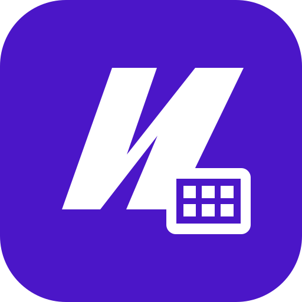

Uji Aplikasi Mandiri
Halaman ini khusus untuk menguji pemasangan PWA Android dan tampilan mode aplikasi mandiri.
Tidak terhubung ke database, transaksi, stok, akun, maupun sinkronisasi MAMBO KASIR.
Memeriksa dukungan perangkat…
Jika tombol pasang tidak muncul, buka menu browser dan cari “Install app” atau “Add to Home screen”.